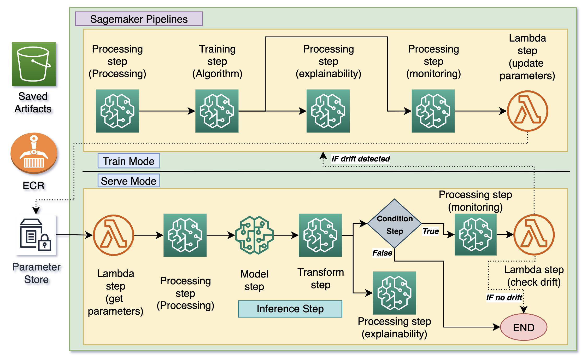

End-to-End MLOps on AWS: Part3.2- Time Series Forecasting: Detailed working of Pipelines #
| Authors: Palash Nimodia , Abhishek Tawar , Steffi Andrade |
| Last Edited: 01/07/2023 |
| Previous Blog Link: E2E MLOps on AWS: Part3.1- Time Series Forecasting: MLOps Overview and Simulation |
This blog is a part of a series of blogs explaining MLOps workflows we built. In this blog, we will talk about the end-to-end time series forecasting pipelines developed using AWS sagemaker pipeline. We will explain the working of the pipeline in detail including he steps involved and the various AWS services used. For more details and an overview of MLOps, the components used and the types of components; go through this blog ). Also, for an overview of the time series pipeline refer to previous blog . You can find the solution code repository here .
The pipelines consists of components, each component has a specific task in the pipeline based on their function. Each component needs to be executed using an appropriate step in the sagemaker pipeline. We used the following steps in our pipelines: Lambda step, Processing step, Training step, Model step, Transform step, Condition step depending on the function of the corresponding component.
The Parameter store is a JSON file saved in S3. Alternatively, AWS Systems Manager Parameter Store could also be used.
Communication between Steps in the Pipeline: #
SageMaker Pipeline steps define the actions that the pipeline takes and the relationship between steps using properties. Each step requires certain parameters to be pass. Three types of parameters are used in the pipelines: These parameters can be categorized into three types:
-
Sagemaker Pipeline Parameters:
Variables are introduced into your pipeline definition using pipeline parameters and can be referenced throughout the pipeline. Parameters have a default value, which can be updated by specifying parameter values when starting a pipeline execution.
-
Parameter fetched from the parameter store:
To enable the model lifecycle management workflow it is required to version control important parameters. Some of such parameters are model artifacts location, drift baseline reports location, training data location etc. We maintain a parameter store to version all these parameters.
-
Parameter fetched from the previous step:
The step properties attribute is used to add data dependencies between steps in the pipeline. These properties are referenced as placeholder values and are resolved at runtime. The properties of one step are passed as input to another step in the pipeline.
End-to-End Pipeline Flow: #
|  |
|---|
| AWS End-to-End Pipeline Architecture Diagram: Entries in the bracket indicate component names |
As discussed in the previous blogs, the end-to-end pipeline consists of two distinct sagemaker pipelines — Training pipeline and Inference pipeline. Both pipelines contain four distinct components i.e. processing, training, inference, explainability, and monitoring. Additionally, there are a few additional helper steps. Each component supports two run modes — Train mode and Serve mode. For the inference and training pipeline, every component will be running in the “Serve” mode and “Train” mode respectively. Let’s discuss the individual pipeline flows in detail —
- Training Pipeline Flow:
- Training pipeline can be triggered by the inference pipeline when there is drift detected and the cooling period is over. The cooling period starts on the day the latest model was trained and continues for days equal to the look ahead period.
- The first step is the processing component that reads the training data, performs data cleaning/preprocessing and finally saves the training and validation data in s3.
- The algorithm component is the next step and it uses the traning data to train an LSTM model and validation data to calculate the validation accuracy. The generated model artifacts are saved in S3.
- Next the explainability component computes shap values. It also generates and saves a clarify report. This step is triggered only after the algorithm component step is completed.
- The monitoring component uses a sagemaker processing job to generate drift baselines/artifacts. It generates two kinds of baselines to detect drift in data and model and saves the drift baseline reports in s3. This step is triggered only after the algorithm component step is completed and runs in parallel with the explainability step.
- The last step of the training pipeline ‘update parameters’ is the lambda step that updates the parameter store with the latest model and other artifact paths generated by the training pipeline. These parameters act as pipeline input parameters for the inference pipeline.
- Inference Pipeline Flow:
- The first step in the pipeline is ‘get parameter’, it fetches the parameters from the parameter store and assigns them to the step properties which can be used throughout the pipeline. This step is defined as a lambda step. This step also checks if there is a forecast (generated by previous inference pipeline run) available for the actual date (Actual date is the latest date for which actuals are available = inference date - [Look ahead + 1] days). The first lambda step(of inference pipeline) sets the condition variable as “true”, if the forecast data is available else “false”.
- Next, the processing component reads the inference data, performs cleaning/preprocessing steps and finally saves the preprocessed data in s3.
- The algorithm component consists of two sub-steps. The first sub-step is the ‘model step’ where a sagemaker model is created using the model artifact path obtained from the parameter store. This sagemaker model is then used in the next step that is the ‘transform step’ to perform batch inference.
- The explainability component uses sagemaker processing jobs to compute shap values for the generated forecast. It also generates and saves a clarify report.
- The next step is the condition step which is executed in parallel with the explainability step as they both have dependency on the transform step. This condition step will reference the condition variable set by first step ‘get parameter’ and check if it is equal to “true”. If the condition is satisfied, it will execute the monitoring component and the final drift check lambda step else end the pipeline execution.
- The monitoring component detects drift in batch mode. It generates and saves the data and model drift report in s3. This step is also defined as a processing step and it is triggered if the condition step was satisfied.
- The final step is ‘Check Drift’ defined as a lambda step. It is used to first check if the cooling period is over and then check the output of the monitoring component to identify if drift was detected in data or model. If the cooling period is over and drift is detected, this step will trigger the training pipeline and complete the execution.
We now have an understanding of the working of the end-to-end sagemaker pipeline, the various steps involved and the AWS services used. In the next and also the final blog of the series based on forecasting, we will deep dive into the functionality and working of the individual pipeline components in detail. You can find the next blog here .
References: #
- https://docs.aws.amazon.com/sagemaker/latest/dg/define-pipeline.html
- https://docs.aws.amazon.com/sagemaker/latest/dg/build-and-manage-steps.html
- https://sagemaker-examples.readthedocs.io/en/latest/sagemaker-pipelines/tabular/abalone_build_train_deploy/sagemaker-pipelines-preprocess-train-evaluate-batch-transform.html